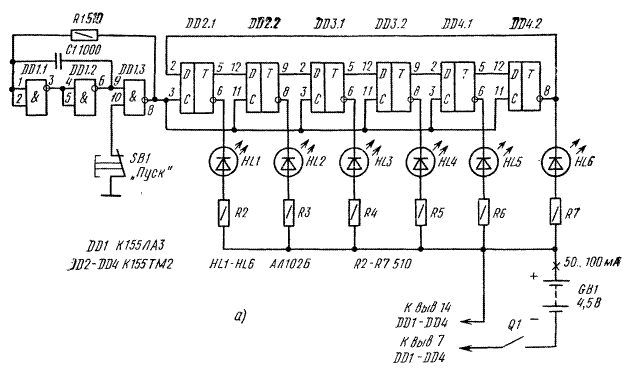
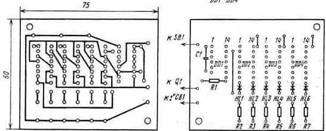

Электронный кубик
Всем знакомы игры, в которых перед началом хода требуется бросать небольшой пластмассовый кубик, на шести гранях которого нанесено от одной до шести точек (очков). Бросая по очереди кубик, играющие суммируют очки: кто больше набрал, тот и выиграл.
Можно изготовить электронное устройство, заменяющее такой кубик. На передней панели устройства должны быть шесть светодиодов, кнопка и тумблер включения. Стоит нажать кнопку - и количество светящихся светодиодов покажет число набранных в очередном туре очков.
Принципиальная схема электронного кубика представлена на рис. 1. На трех логических элементах 2И-НЕ микросхемы DD1 собран генератор, а на шести D-триггерах (микросхемы DD2-DD4) -кольцевой счетчик.
Генератор представляет собой трехкаскадный усилитель, охваченный положительной обратной связью через конденсатор С1 и отрицательной - через резистор R1. При наличии таких связей в усилителе возникают автоколебания, частота которых определяется произведением R1C1. При этом контакты кнопки SB1 должны быть разомкнуты. Запомните эту схему - в дальнейшем она будет использоваться во многих устройствах.
Рассмотрим работу счетчика. Как видно из схемы, все синхронизирующие входы D-триггеров соединены между собой, а вход D последующего триггера соединен с прямым выходом предыдущего D-триггера. Вход же D первого триггера (DD2.1) соединен с инверсным выходом последнего триггера (DD4.2). Работу цепи триггеров (ее еще называют кольцевым триггерным счетчиком) удобно проанализировать по таблице истинности (табл. 2). Выходы Q1-Q6 - это прямые выходы триггеров. Допустим, в исходный момент все триггеры находятся в нулевом состоянии. Тогда на входе D первого триггера - напряжение высокого уровня, поступающее с инверсного выхода шестого триггера. После поступления первого импульса триггер DD2.1 переключается в единичное состояние, и с его прямого выхода напряжение высокого уровня поступает на вход D триггера DD2.2. Поэтому после поступление импульса № 2 второй триггер переключается в единичное состояние.

Рис. 1 - Схема электрическая принципиальная электронного кубика
По мере поступления на входы С шести, импульсов все триггеры переключаются в единичное состояние. При этом светятся все светодиоды, подключенные к инверсным выходам триггеров. На вход D первого триггера теперь подано напряжение низкого уровня, и при подаче последующих шести импульсов триггеры последовательно переключаются в нулевое состояние. Из табл. 2 видно, что период работы кольцевого счетчика равен 12 тактам.
При нажатии кнопки SB1 "Пуск" импульсы частотой 1...2 МГц с генератора поступают на вход кольцевого счетчика. Последний за время удержания кнопки (1...2 с) многократно переполняется, поэтому после отпускания кнопки состояния триггеров DD2.1 -DD4.2, отображаемые горящими светодиодами HL1-HL6, практически случайны. Сколько светодиодов зажглось, столько очков и записывают в актив игроку.
| Номер импульса | Q1 | Q2 | Q3 | Q4 | Q5 | Q6 |
|---|---|---|---|---|---|---|
| 0 | 0 | 0 | 0 | 0 | 0 | 0 |
| 1 | 1 | 0 | 0 | 0 | 0 | 0 |
| 2 | 1 | 1 | 0 | 0 | 0 | 0 |
| 3 | 1 | 1 | 1 | 0 | 0 | 0 |
| 4 | 1 | 1 | 1 | 1 | 0 | 0 |
| 5 | 1 | 1 | 1 | 1 | 1 | 0 |
| 6 | 1 | 1 | 1 | 1 | 1 | 1 |
| 7 | 0 | 1 | 1 | 1 | 1 | 1 |
| 8 | 0 | 0 | 1 | 1 | 1 | 1 |
| 9 | 0 | 0 | 0 | 1 | 1 | 1 |
| 10 | 0 | 0 | 0 | 0 | 1 | 1 |
| 11 | 0 | 0 | 0 | 0 | 0 | 1 |
| 12 | 0 | 0 | 0 | 0 | 0 | 0 |
Питаются микросхемы от батареи GB1, потребляя ток 50...100 мА.
Все элементы устройства, кроме SB1, Q1 и GB1, расположены на печатной плате (рис. 2). Выключатель питания Q1 (он может быть типов П2Т, МТ1, П2К) и кнопка SB1 (она может быть типов КМ1, МП1 или любого другого типа) расположены на верхней крышке. Здесь же просверлены отверстия для светодиодов HL1-HL6. Плата с деталями крепится с помощью винтов с ограничивающими втулками.

Рис. 2 - Расположение печатных проводников и деталей на плате
Батарея GB1 может быть типа 3336 "Рубин"; светодиоды HL1-HL6 - типов АЛ102, АЛ307 АЛ310 с любыми буквенными индексами; конденсатор С1 - типов КЛС, КМ-5, К10-7в, К10-23; резисторы - типа МЛТ-0,25.
Электронный кубик в налаживании не нуждается.
Начинающие радиолюбители могут "увидеть", как переключаются триггеры при поступлении импульсов генератора. Для этого параллельно конденсатору С1 необходимо подключить оксидный конденсатор емкостью 200...500 мкФ на напряжение 6...10 В отрицательной обкладкой к выводам 1, 2 логического элемента DD1.1. При этом частота генератора уменьшится до 0,5...2 Гц, и по зажиганию соответствующих светодиодов можно проследить последовательность переключения триггеров. Разумеется, кнопка SB1 должна быть постоянно нажата.